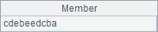

l Problem
Please compile a program to answer the following 10 questions:
1. Which is the question that has the first answer b?
(a) 2; (b) 3; (c) 4; (d) 5; (e)6
2. The only consecutive questions which have same answers are:
(a) 2, 3; (b) 3, 4; (c) 4, 5; (d) 5, 6; (e) 6, 7;
3. Which is the question whose answer is the same as the answer to this question?
(a) 1; (b) 2; (c) 4; (d) 7; (e) 6
4. The number of questions with the answer a is:
(a) 0; (b) 1; (c) 2; (d) 3; (e) 4
5. Which is the question whose answer is the same as the answer to this question?
(a) 10; (b) 9; (c) 8; (d) 7; (e) 6
6. What is the answer to the questions whose number is the same as the number of questions whose answer is a?
(a) b; (b) c; (c)d; (d) e; (e) none of the above
7. According to the alphabetical order, how many letters are there between the answer to this question and the answer to the next question?
(a) 4; (b) 3; (c) 2; (d) 1; (e) 0. (Note: there is one letter between a and b)
8. The number of questions whose answers are vowel is:
(a) 2; (b) 3; (c) 4; (d) 5; (e) 6. (Note: a and e are vowels)
9. The number of questions whose answers are consonants is:
(a) a prime number; (b) a factorial; (c) a square number; (d) a cubic number; (e) multiple of 5
10. The answer to this question is:
(a) a; (b) b; (c) c; (d) d; (e) e
l Tip
General steps: Record the options a, b, c, d, and e for the question respectively as 1, 2, 3, 4, and 5, for convenience of counting for every answer. Firstly set all answer options for the questions to 0, and then add, in turn, 1 to each option, and evaluate each option according to the task description of. If an answer option is incorrect for a certain question, then add 1 to it till the correct one is found. If there is still no correct answer after 5 options have all went through a round of examination, then return to reset the answer to the preceding question. Skip the question whose answer is 0 directly and make no evaluation.
1. Initialize answers to the 10 questions as 0, and set the serial number of the current question to 1.
2. Loop from the first question. Firstly add 1 to each answer option to the question, judge whether the answer to the current question is 6. If it is 6, the answer falls out of the five options. Then set the answer to the question as 0, and subtract 1 from i to return to the preceding question to restart the loop.
3. Then invoke the sub-function to judge the answer options for the question. If they are not correct, then proceed to the next loop.
4. If the correct answer is found, add 1 to i and judge whether i is equal to 11. If it is equal to 11, 10 questions have been answered. Next convert the final answers into a string for storage, and set i as i-1 to return to the preceding question to continue the loop to see whether there is any other answer that satisfies the condition. End the loop when i is equal to 1.
5. The sub-function judges the options question by question. The judgment process is this: first look at whether this question or the relevant question is 0; if it is 0which indicates no answer is set, skip over the judgment; if it is not 0, then make judgment according to the question.
l Code
|
|
A |
B |
C |
D |
|
|
1 |
=[0]*10 |
>i=1 |
|
A1 is used to store the answers to 10 questions, the initial value is 0, and i is the serial number of question. |
|
|
2 |
for i>0 |
>A1(i)=A1(i)+1 |
|
Add 1 to the answer to the question. |
|
|
3 |
if A1(i)==6 |
>A1(i)=0,i=i-1 |
next |
If the answer is still incorrect when the answers are set to the last option, then set the answer to the current question as 0, return to the preceding question, add 1 to the answer to the preceding question and loop again. |
|
|
4 |
if !func(A8) |
next |
Invoke function to judge whether answers set this time are reasonable. If they are not reasonable, then enter the next loop, and continue to add 1 to the answers. |
||
|
5 |
|
>i=i+1 |
|
|
If the setting of the answers to the question is reasonable, then set answers to the next question. |
|
6 |
|
if i==11 |
=C6|A1.(char(asc("a")+~-1)).concat() |
>i=i-1 |
If all the answers are reasonable when the answers to the last question has been set, convert the answers into letters and store them in C6. Set the value of i as i-1, return to the preceding question to see whether any other answer satisfies the requirement, End the loop when i is equal to 1. |
|
7 |
|
|
|
|
This is a judge function to check if the answer to every question is correct. If answer is 0, then it indicates there is no answer yet, and ¡°true¡± will be returned. |
|
8 |
func |
if A1(1)!=0 |
|
|
Jude whether answers are set for the first question. |
|
9 |
|
|
=A1(A1(1)+1) |
|
According to the answers to the first question, find the first question whose answer is b.
|
|
10 |
|
|
if C9!=0 && C9!=2 || A1(to(A1(1))).pos(2)>0 |
return false |
If the answer set for the question found in C9 is not b, or before this question, there is already an answer to this question, which is b, then return ¡°false¡±.
|
|
11 |
|
if A1(2)!=0 |
=A1(2)+1 |
|
According to the answers to the second question, find the serial numbers of two consecutive questions which have the same answer.
|
|
12 |
|
|
if A1(C11)*A1(C11+1)>0 && A1(C11)!=A1(C11+1) |
return false |
/if answers set for the question found in C11 are not the same as the answers to the following question, return ¡°false¡±.
|
|
13 |
|
|
if A1.pselect(~>0 && ~==~[1] && #!=C11)>0 |
return false |
/If the answers to another two questions are the same, it indicates that C11 is not unique, return ¡°false¡±. |
|
14 |
|
if A1(3)!=0 |
=A1([1,2,4,7,6](A1(3))) |
|
According to the answers to the third question, find the question answer whose answers are the same as those of the third question. |
|
15 |
|
|
if C14!=0 && C14!=A1(3) |
return false |
/if C14 is not 0 and is not the same as the answers to the third question, return ¡°false¡±. |
|
16 |
|
=A1.count(~==0) |
=A1.count(~==1) |
|
B16 computes out the number of questions for which no answers are set. C16 computes out number of questions whose answer is a. |
|
17 |
|
if A1(4)!=0 |
=C16-A1(4)+1 |
|
C16 deducts the answer to the fourth question. Because there is a difference of 1 between the serial number of answer and the answer value, add 1. |
|
18 |
|
|
if C17>0 || C17<0 && B16==0 |
return false |
If the result computed by C17 is greater than 0, that is, the set number of questions whose answer is a is greater than the number of choices in the forth question; Or when answers are set for all questions, but C17 is still less than 0, that is, the answer given in the set choice of the fourth question (to count the questions whose answer is a) is greater than the actual number of questions whose answer is a return ¡°false¡±.
|
|
19 |
|
if A1(5)!=0 |
=A1([10,9,8,7,6](A1(5))) |
|
According to the answer to the fifth question, find the question whose answer is the same as that of the fifth question. |
|
20 |
|
|
if C19!=0 && C19!=A1(5) |
return false |
If C19 is not 0 and is not the same as the answer to the fifth question, return ¡°false¡±. |
|
21 |
|
if B16==0 |
=A1.align@a([2,3,4,5]).(~.len()) |
|
C12 computes the number of questions whose answers are respectively 2, 3, 4, and 5. |
|
22 |
|
|
if !((A1(6)!=5 && C21(A1(6))==C16) || (A1(6)==5 && C21.pos(C16)== null)) |
return false |
If the answer to the sixth question is 5 and the number of answers that are 5 is different from the number of all the questions of C12, then return true. If the answer to the sixth question is not 5 and the number of the questions to which its answer corresponds is consistent with that in C12, then return ¡°true¡±. For other situations, return ¡°false¡±.
|
|
23 |
|
if A1(7)!=0 |
if A1(8)!=0 && abs(A1(8)-A1(7))!=5-A1(7) |
return false |
If answers are set for the eighth question, and the number of choices between the answer to the eighth question and the answer to the seventh question is inconsistent with the answer choice for the seventh question, return ¡°false¡±.
|
|
24 |
|
if A1(8)!=0 |
=C16+A1.count(~==5)-A1(8)-1 |
|
Compute out the sum of the numbers of questions whose answers are a and e and its difference value when subtracting the answers to the eighth question.
|
|
25 |
|
|
if C24>0 || C24<0 && B16==0 |
return false |
If the result computed in C24 is greater than 0, that is, the existing vowel answers are more than the number of the choices in the eighth question, or when answers are set for all questions, but C24 is still less than 0. That is, answers are set for all questions, but the number of vowels is still less than the number of the choices in the eighth question, then return ¡°false¡±.
|
|
26 |
|
if B16==0 |
[[2,3,5,7],[1,2,6],[0,1,4,9],[0,8],[0,5,10]] |
|
Cell C26 defines number of possible questions of various options in the ninth question.
|
|
27 |
|
|
if C26(A1(9)).pos(A1.count(~>=2 && ~<=4))== null |
return false |
If the computed number of consonants is not in C26¡¯s sequence, then return ¡°false¡±.
|
|
28 |
return true |
|
|
|
l Result
